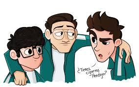

Cosas que me gusta ver
Una de las cosas que más disfruto es ver en Twitch a El Mariana, Aldo Geo y Roier, mejor conocidos como el MCTRIO. La dinámica entre los tres es increíblemente divertida, cada uno aporta algo único que hace que sus streams sean entretenidos de principio a fin. Ya sea que estén jugando juntos o simplemente charlando, la química entre ellos es innegable, y eso es lo que los hace destacar. Es imposible no engancharse cuando los ves interactuar y pasarla bien.
Lo que más me gusta de ellos es cómo logran crear momentos de pura comedia de forma espontánea. Ya sea en juegos competitivos o simplemente haciendo bromas entre ellos, siempre me sacan una risa. Mariana tiene ese humor ácido que te toma por sorpresa, mientras que Algo_Geo tiene una personalidad más tranquila pero con un sentido del humor sutil que encaja perfectamente. Roier, por su parte, aporta esa chispa extra, haciendo que cualquier situación sea aún más graciosa.
Otra cosa que me atrapa de sus streams es la manera en que conectan con su comunidad. Se nota que les importa mucho interactuar con quienes los siguen, respondiendo en el chat y creando un ambiente inclusivo y amigable. Se siente como si estuvieras entre amigos, siendo parte de las bromas y momentos épicos. Aparte, siempre tienen algún desafío o colaboración que hace que cada stream sea distinto y fresco.En definitiva, ver al MCTRIO se ha vuelto uno de mis pasatiempos favoritos en Twitch. Es ese tipo de contenido que te hace desconectar por completo, olvidarte de todo por un rato y simplemente disfrutar de la diversión que ellos transmiten. Sin duda, seguiré al pendiente de lo que hacen, porque nunca se sabe qué ocurrencia nueva traerán en su próximo stream
Cosas que me gusta hacer
Una de las cosas que más disfruto hacer es diseñar pósters, ya sea para jugadores o luchadores. Me encanta combinar elementos gráficos con la esencia de cada persona a la que represento, capturando no solo su imagen, sino también su personalidad y estilo. El proceso creativo de armar un póster me permite experimentar con colores, formas y tipografías, logrando que cada diseño sea único y memorable. Es muy satisfactorio ver cómo un buen diseño puede transmitir tanto en una sola imagen.
Por ejemplo, cuando diseñé el póster para Diego De Buen, quise resaltar su presencia en el campo de fútbol. Utilicé colores que representaran su equipo y una pose que reflejara su fortaleza y determinación. La combinación de texturas y efectos de luz le dio un toque dinámico al diseño, haciéndolo destacar como un jugador clave. Siempre busco que mis pósters no solo se vean bien, sino que también conecten con quienes los ven.
Otro ejemplo es el póster de Quiñones, donde el enfoque fue completamente distinto. Al ser luchador, quise transmitir la energía y el impacto de su presencia en el ring. Utilicé colores más agresivos, con un fondo oscuro y efectos de brillo que resaltaran su figura. Quería que se sintiera la adrenalina y el poder que trae cada vez que sube a pelear. A veces, menos es más, y en este diseño los elementos gráficos jugaron un papel crucial para destacar la intensidad de su estilo de lucha. Cada póster que hago es un reto y una oportunidad para contar una historia visual. Me gusta que mis diseños hablen por sí solos, que reflejen no solo al deportista o luchador, sino también la emoción de lo que hacen. Es algo que me apasiona y siempre busco mejorar en cada proyecto.
Página
En mi página, me gusta compartir dos de mis grandes pasiones: el diseño gráfico y el entretenimiento en plataformas como Twitch. En la sección dedicada a lo que disfruto hacer, resalto mi amor por diseñar pósters, tanto para jugadores como para luchadores. Cada proyecto es una nueva oportunidad para explorar mi creatividad y contar una historia visual a través de gráficos y colores. Me encanta plasmar la esencia de cada persona en mis diseños, como el póster de Diego De Buen, donde logré capturar su fuerza y determinación, o el de Quiñones, que transmite la energía y el impacto de su presencia en el ring.
Además, en mi página no puedo dejar de mencionar mi afición por ver contenido en Twitch, especialmente los streams de El Mariana, Aldo Geo y Roier, quienes forman el MCTRIO. La dinámica entre ellos es pura diversión y siempre me sacan una risa. Me gusta cómo interactúan con su comunidad y crean un ambiente acogedor y entretenido. Sus momentos de comedia y espontaneidad hacen que cada transmisión sea única, permitiéndome desconectar y disfrutar de su humor.
Al combinar estas dos pasiones, mi página se convierte en un espacio donde puedo expresar mi amor por el diseño y el entretenimiento. Espero inspirar a otros a explorar su creatividad y disfrutar de la diversión que las plataformas de streaming tienen para ofrecer. ¡Estoy emocionado de compartir todo esto y más!